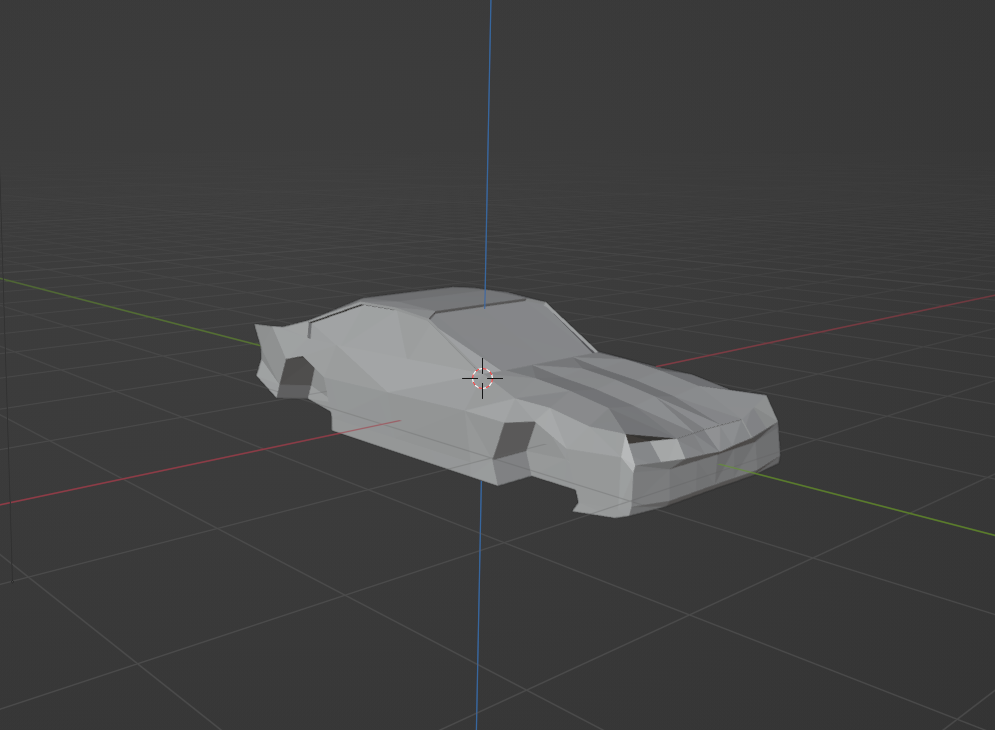
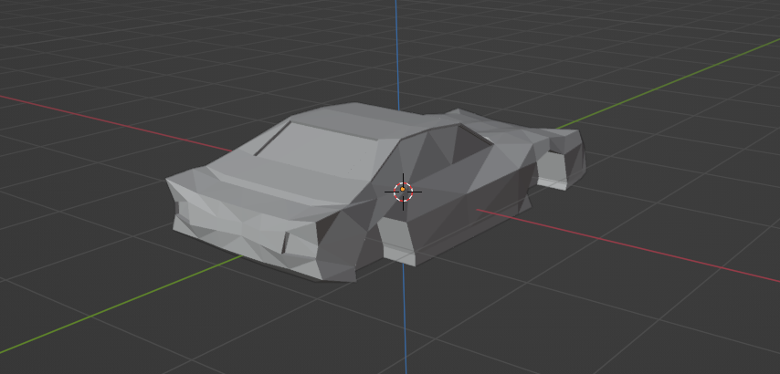
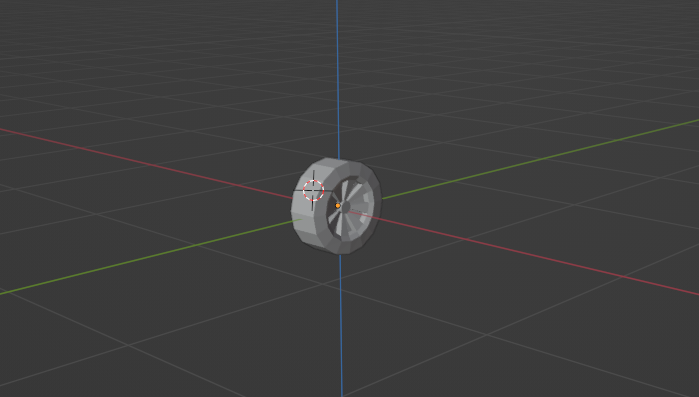
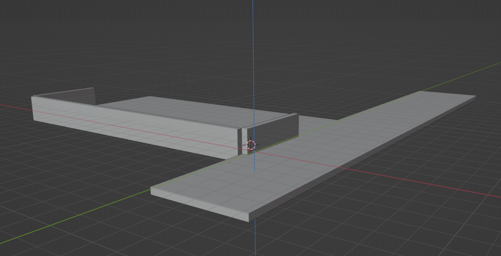
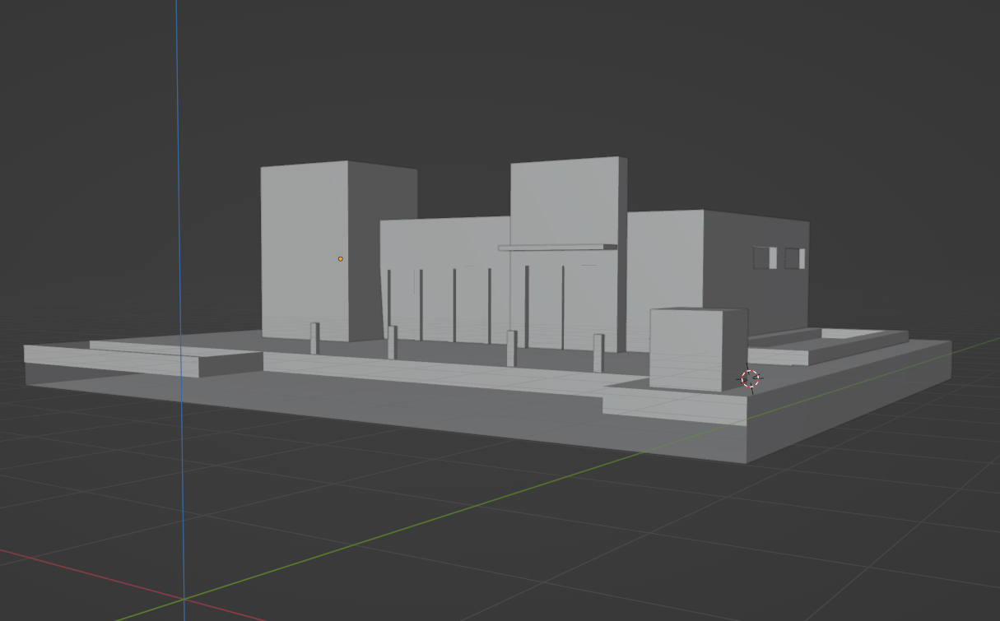

INTRODUZIONE
Descrizione
Happy parking è una Web Application di grafica 3D che prevede la possibilità di parcheggiare la propria automobile in un parcheggio posizionato al di fuori di un centro commerciale.
Avvio dell'applicazione
Per poter utilizzare l’applicazione e garantire il corretto caricamento delle varie risorse esterne è necessario lanciare un Server Web locale. Per fare ciò esistono due alternative:
- Sfruttare Python nel caso in cui sia già installato scrivendo dal shell nella cartella project
python -m http.server 8000
E nel Browser digitare localhost:8000 - Sfruttare l’estensione Live Server fornita da Visual Studio Code, installarla e cliccare in basso a destra sul tasto ‘Go Live’.
Struttura della pagina
Dopo aver avviato l’applicazione, ci si troverà davanti ad una pagina con la seguente struttura:
- mainCanvas: canvas principale posto in background tramite il file CSS al fine di non coprire gli altri elementi presenti. È un oggetto canvas con contesto webGL attraverso il quale è realizzata la grafica 3D dell’applicazione
- instructionCanvas (visibile nella terza immagine): oggetto canvas con contesto 2D utilizzato per mostrare le istruzioni d’utilizzo dell’applicazione. Il testo all’interno di esso apparirà e scomparirà (verrà cancellato) attraverso il click del bottone ‘ISTRUZIONI’ all’interno del pannello UI
- touchCanvas 1 e 2: oggetti canvas con contesto 2D all’interno delle quali viene disegnata l’immagine di due gamepad utilizzabili da dispositivi mobile
- collisionCanvas (visibile nella seconda immagine): oggetto canvas con contesto 2D utilizzata solamente nella ‘modalità parcheggio’ per informare l’utente di un eventuale collisione tra la macchina e un altro oggetto della scena
- pannello UI: elemento div utilizzato come contenitore delle varie funzionalità rese disponibili all’utente
Utilizzo
L’applicazione prevede due modalità, selezionabili tramite il pannello UI:
- Modalità Scena: l’utente può familiarizzare con la scena e visualizzarla da diversi punti di vista tramite il movimento della camera.
- Spostamento in avanti/indietro/destra e sinistra tramite i tasti awsd o il gamepad in basso a sinistra
- Spostamento alto/basso tramite i tasti up/down arrow della tastiera
- Ruotare tramite i tasti left/right arrow o il gamepad in basso a destra
- Modalità Parcheggio: l’utente può guidare l’automobile per parcheggiarla nel modo migliore possibile prestando attenzione a non collidere con muri/piano o abbandonare la strada. In caso contrario apparirà un messaggio all’interno della collisionCanvas e l’automobile rimbalzerà all’indietro. La guida può avvenire tramite l’utilizzo dei tasti awsd o del gamepad in basso a sinistra. Sono disponibili due modalità di visuale, prima e terza persona, selezionabili dal pannello di controllo. Solo in questa modalità sarà possibile modificare l’opacità di alberi, della colonna a sinistra o dell’entrata fino a renderli trasparenti nel caso ostruiscano la visuale durante il parcheggio.
È inoltre presente la possibilità di attivare/disattivare la rotazione di una luce, resettare la posizione della macchina o la visuale e consultare le istruzioni.
MESH
Creazione ed Esportazione
Le mesh che compongono la scene dell’applicazione sono state create da me utilizzando Blender.
L’automobile e le ruote sono state create con centro nell’origine degli assi e orientate verso la direzione giusta per permettere poi il loro movimento all’interno dell’applicazione. Per le ruote è stata creata un’unica mesh esportata con due rotazioni differenti. Le altre mesh presenti, invece, sono state create nella posizione più consona prendendo in considerazione la locazione della macchina al fine di non dover effettuare translazioni e rotazioni eccessive all’interno del codice dell’applicazione e alleggerire le operazioni di render.
Tutte le mesh vengono esportate in file in formato Wavefront OGJ, rendendone poi facile l’importazione da parte dell’applicazione.
    Importazione
Per quanto riguarda l’importazione delle mesh e il loro caricamento:
viene definito un array globale per ogni mesh da importare più un array ‘Meshes’ che conterrà al suo interno tutte le mesh caricate con le corrispettive informazioni.
All’interno del campo ‘sourceMesh’ di ogni array viene inserito il contenuto del file obj di ogni mesh. Viene chiamata la funzione LoadMesh() passando il contesto gl, l’array di una determinata mesh, il nome che si vuole assegnare e la matrice per identificare la posizione iniziale della mesh.
All’interno della funzione LoadMesh viene chiamata la funzione retrevedataFromSource() necessaria per recuperare i dati della mesh da un file OBJ, nel caso in cui sia presente un file MTL vengono recuperati anche i dati relativi ai materiali e inoltre vengono memorizzati i dati di posizioni, normali e coordinate texture nei corrispettivi buffer object. Dopo aver ottenuto mesh e materiali associati vengono caricate le texture che tali materiali contengono. Tutto quanto viene inserito nell’array Meshes.
Texture
Le Texture sono state applicate definendo il mapping UV tramite Blender
Gli oggetti che presentano una texture sono: la strada, il parcheggio, il cespuglio e il piano su cui poggia e la colonna dell’edificio.
All’interno della funzione LoadMesh, oltre a quanto descritto precedentemente, avviene anche il texture Mapping 2D sfruttando la funzione loadTexture che va ad utilizzare la tecnica del Mip Mapping.
INTERAZIONE
Tutte le interazioni possibili avvengono sfruttando pannello UI oppure tastiera/Touch
Pannello UI
Tramite il pannello di controllo è possibile:
- Cambio Modalità
- Cambiamento della visuale
- Modifica Opacità
- Attivazione/Disattivazione rotazione luce
- Attivazione/Disattivazione istruzioni
- Reset di posizione/visuale
Tastiera/Touch
Tramite la tasitera/touch è possibile il:
- Movimento Camera
- Movimento Automobile
L’utente può muoversi all’interno della scena liberamente attraverso il movimento della camera. Le funzioni per il movimento/rotazione della camera sono all’interno del file cameraUtilis.js Queste funzioni permettono di modificare le variabili globali cameraPosition, target e viewUp, usate poi per definire la matrice vista durante il rendering. Grazie alla variabile booleana viewParamsChanged viene tenuta traccia delle modifiche dei parametri di vista per evitare che la matrice vista venga ricalcolata ogni volta. Attraverso la funzione realign() vengono ricalcolate le giuste direzioni Xe Ye Ze della camera in seguito a rotazioni in modo da avere traslazioni sempre coerenti con l’orientamento corrente della camera.
Il movimento dell’automobile è gestito dalle funzioni presenti nel file carMove.js i cui parametri andranno poi a influenzare posizione, orientamento e rotazione dell’automobile e delle ruote ad ogni frame.
Le interazioni tramite touch dello schermo sono permesse tramite:
- La creazione delle due touchCanvas sfruttando il contesto canvas 2D e la sua funzione drawImage
- Alle touchCanvas sono stati associati listener sia per eventi da mouse che per eventi touch.
L’applicazione, perciò, può essere vista come fruibile anche da dispositivi privi di tastiera e mouse.
ILLUMINAZIONE
Nell’applicazione è prevista una sorgente luminosa la cui rotazione intorno all’asse Y può essere attiva e disattivata. Viene applicato il modello di illuminazione di Phong, il quale stabilisce che il colore di un fragment dipende da:
- componente ambiente
- componente di riflessione diffusa
- componente di riflessione speculare
Queste dipendono da proprietà della luce e del materiale nonché da alcuni calcoli vettoriali Le proprietà dipendenti da materiale e luce vengono estratte direttamente dalle informazioni associate ad ogni mesh. Per quanto riguarda la componente ambiente viene stabilita come variabile globale le componenti luce diffusa e speculare vengono calcolate all’interno del fragment shader.
PARTICOLARITÀ
Opacità/Trasparenza
Per poter operare sull’opacità/trasparenza di un oggetto è necessario abilitare il blending e stabilire in che modo andrà a combinare i fragment con il valore dei pixel già presenti nel frame buffer
gl.enable(gl.BLEND);gl.blendFunc(gl.SRC_ALPHA, gl.ONE_MINUS_SRC_ALPHA);
Tramite questa funzionalità è stato possibile modificare la componente di opacità dei materiali di determinati oggetti al fine di poterli rendere trasparenti nel caso in cui rendessero la vista della macchina e del suo movimento difficile.
Collisioni
L’applicazione prevede una gestione delle collisioni, nonostante sia molto rudimentale.
Per le mesh della macchina, della strada, dei muretti che circondano il parcheggio e del piano sottostante al centro commerciale all’interno della funzione carDoStep() viene chiamata la funzione boundingBox che calcola
- coordinate X e Z minori e maggiori tra i vertici della mesh
- La larghezza e lunghezza della mesh
Avendo questi dati tramite la funzione checkCollision() si identica la presenza di una collisione oppure l’abbandono della strada e lo si comunica all’utente scrivendo un messaggio all’interno della collisionCanvas.
MIGLIORIE FUTURE
Alcune migliorie che si potrebbero implementare all’applicazione sono:
- l'implementazione delle ombre
- prevedere il messaggio di collisione nel punto d'impatto
- assegnare un punteggio in base alla qualità del parcheggio